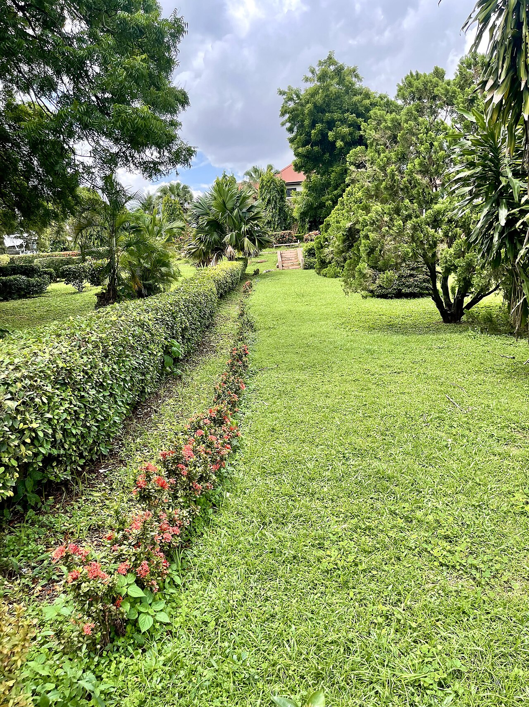

Hedge Cutting
Sharp lines, healthy hedge.
A well-cut hedge is the difference between a garden that looks kept and one that looks wild. Regular trimming keeps it dense from top to bottom.
What's involved
Annual or twice-yearly trimming for formal hedges, reductions for hedges that have got too tall or wide, and reshaping for hedges that have grown bare at the base. Clippings are always cleared and taken away. Leylandii, laurel, beech, privet, yew and mixed native hedges all handled.
Typical cost
From around £50 for a small garden hedge to £300+ for long or tall boundaries. Regular visits cost less per visit than one-off rescues.
Good to know
Nesting birds are protected by law between March and August. If birds are nesting in your hedge, the work waits - a good tree surgeon checks first.
